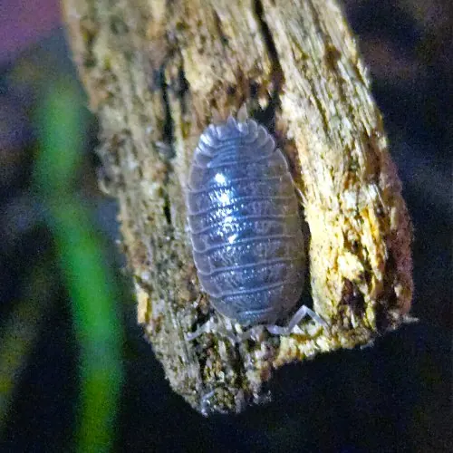
Giant Canyon
Porcellio dilatatus
Southern Europe and the Mediterranean. A big, bold woodlouse from dry, rocky country.
Native locales of our isopods
Isopods are found on every continent, but each species started somewhere. Knowing where an isopod comes from tells you what climate it likes. Locales below are the native range of each species.
The Porcellio and Powder isopods. Temperate to warm, rocky, leaf-littered ground.

Porcellio dilatatus
Southern Europe and the Mediterranean. A big, bold woodlouse from dry, rocky country.
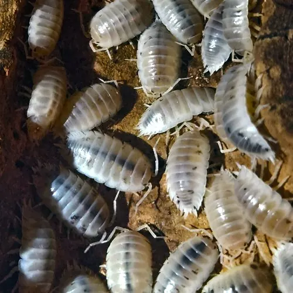
Porcellio laevis
Mediterranean region, now found worldwide. Warmth-loving; lives in leaf litter, under stones and in compost.
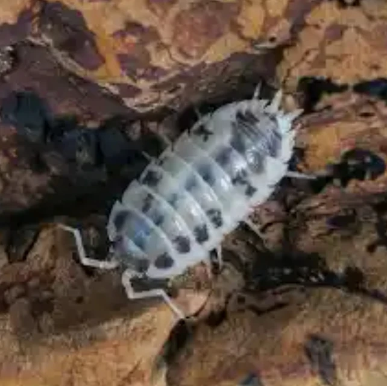
Porcellio laevis
Same species as our Whites: Mediterranean origin, spread worldwide by people. Spotted morph.
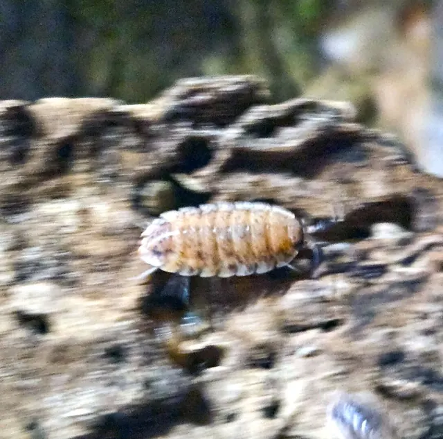
Porcellio scaber
Western Europe. The common rough woodlouse, now on nearly every continent.
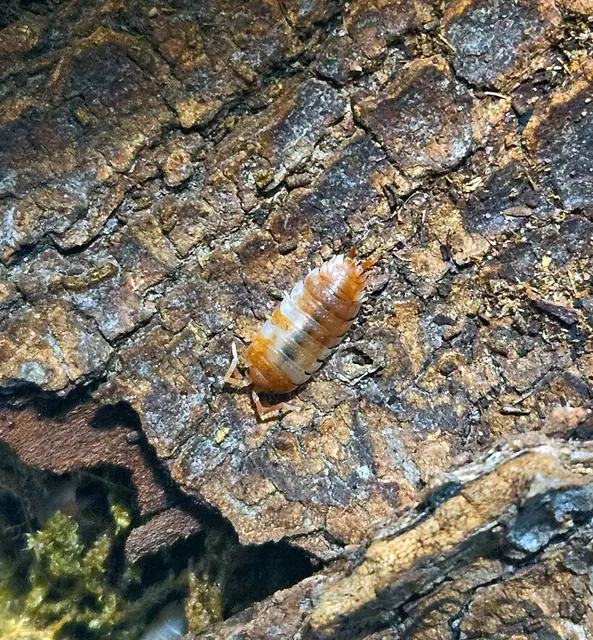
Porcellio scaber
Western Europe, like all P. scaber. Found under bark, logs and stones in damp woods and gardens.
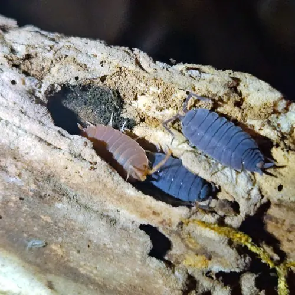
Porcellionides pruinosus
Mediterranean and southern Europe, now worldwide. Loves warm, damp compost and leaf litter.
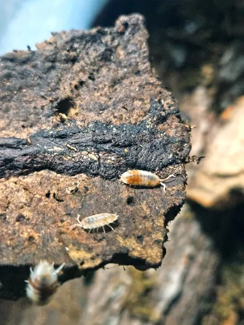
Porcellionides pruinosus
Same species as our Powders: Mediterranean origin, found in warm regions around the globe.
Care takeaway These species come from milder climates, so they tolerate cooler, drier conditions better than tropical isopods. Give them a damp side and a dry side.
The Cubaris, often called “rubber ducky” types. Warm, humid forest floors and limestone country.
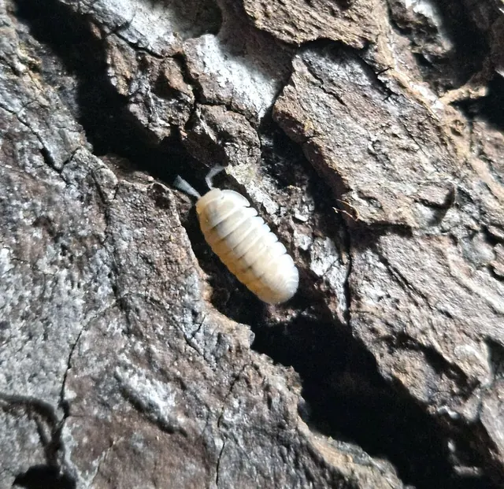
Cubaris sp.
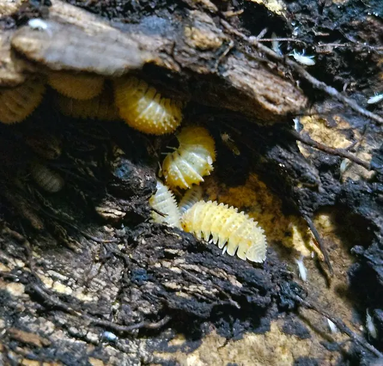
Cubaris sp.
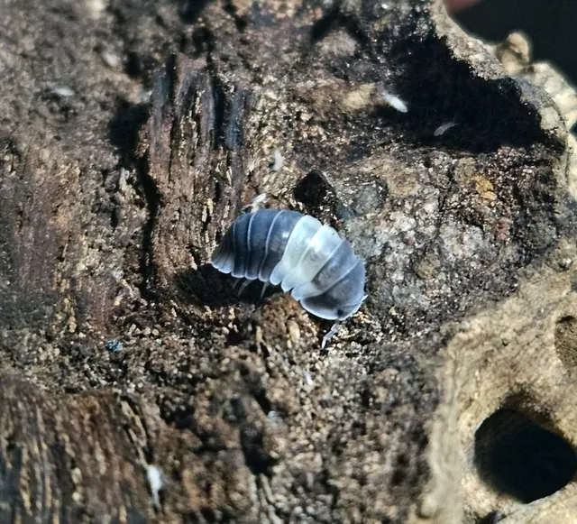
Cubaris sp.
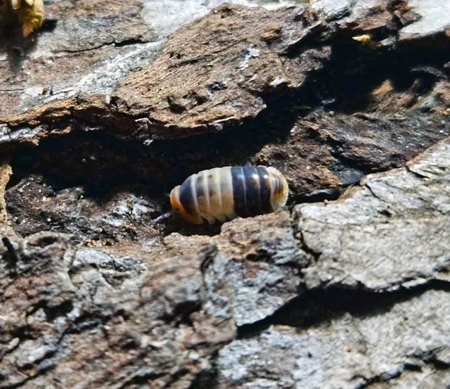
Cubaris sp.
Care takeaway Cubaris is a Southeast Asian genus. These trade morphs have not been formally described to species, so the exact collection locality is not documented. Treat them as warm-climate, humid-leaf-litter animals.
A tiny cleanup-crew species found in warm places around the world.
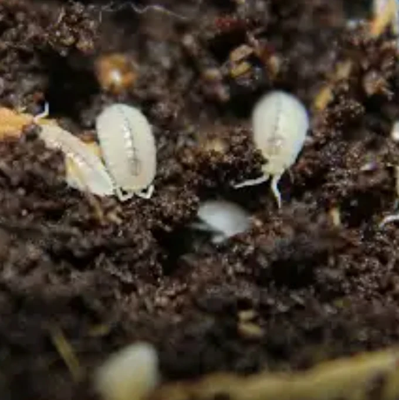
Trichorhina tomentosa
Tropical and subtropical regions worldwide. Native range is uncertain, often traced to the Americas. Tiny, pale, and fond of warm, moist soil.
Care takeaway Keep it warm and moist. It does not handle cold.